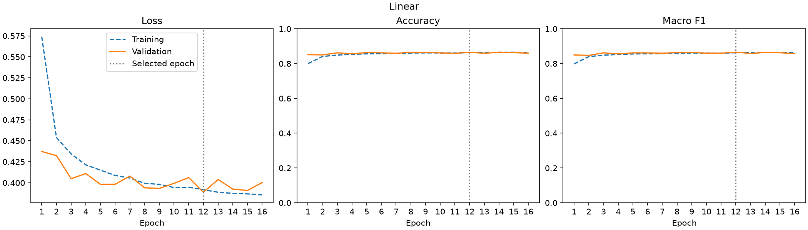
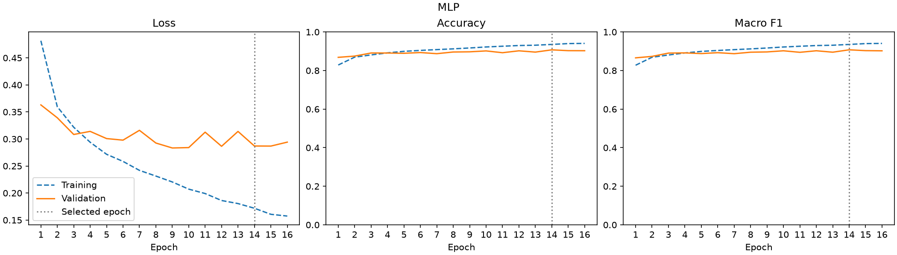
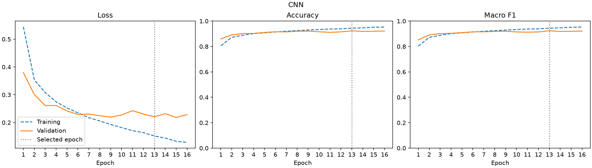
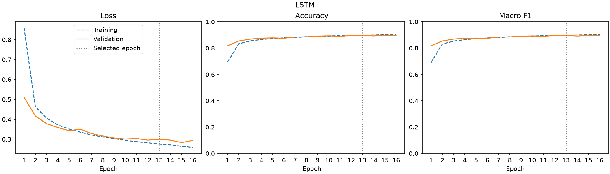
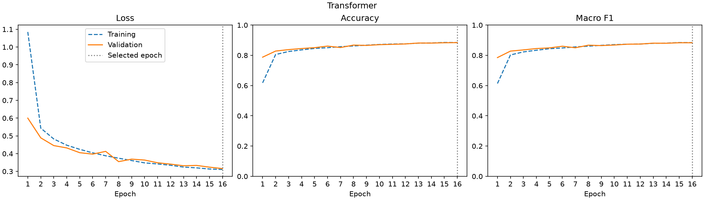

1. Saved runs
The main comparison has 25 runs: 5 models × 5 training seeds (42–46). All 25 runs trained on 4 October 2026 in one environment: Python 3.11.16, PyTorch 2.14.0, NumPy 2.4.6, macOS 15.6.1 arm64, CPU with 4 threads, float32. The 15 budget runs use the same environment. The 45 extension runs use a second environment. Timings are compared only within one environment. Each run completes 16 epochs on the same 54,000/6,000/10,000 training/validation/test split.
The highest validation macro-F1 selects best.pt. The earliest epoch wins a tie. checkpoint.pt keeps the final epoch. All values on this page use best.pt.
| Model | Parameters | Best epoch, mean (range) | Validation macro-F1 (%) | Test accuracy (%) | Test macro-F1 (%) | Fit time (s) | Test inference (ms/image) |
|---|---|---|---|---|---|---|---|
| Linear | 7,850 | 11.6 (5–15) | 86.51 ± 0.07 | 84.17 ± 0.08 | 84.15 ± 0.11 | 4.15 ± 0.67 | 0.0013 ± 0.0001 |
| MLP | 203,530 | 14.4 (12–16) | 90.54 ± 0.17 | 88.77 ± 0.26 | 88.77 ± 0.23 | 7.77 ± 0.92 | 0.0020 ± 0.0001 |
| CNN | 105,866 | 14.6 (13–16) | 92.56 ± 0.21 | 91.26 ± 0.28 | 91.27 ± 0.27 | 105.36 ± 4.87 | 0.0270 ± 0.0003 |
| LSTM | 24,714 | 14.2 (13–16) | 89.80 ± 0.11 | 88.11 ± 0.25 | 88.10 ± 0.21 | 46.37 ± 0.31 | 0.0219 ± 0.0009 |
| Transformer | 19,530 | 15.8 (15–16) | 88.48 ± 0.33 | 87.15 ± 0.39 | 87.06 ± 0.36 | 102.85 ± 1.61 | 0.0545 ± 0.0005 |
CNN has the highest mean validation macro-F1. Its test macro-F1 is 91.27 ± 0.27%. Seed variability and paired comparisonsTraining protocol
2. All 25 runs
Each row is one saved run folder in Assignment1/outputs/. Seed 42 is the primary run. Seeds 43–46 measure training variability only. They do not change model selection.
| Model | Seed | Run folder | Best epoch | Validation macro-F1 (%) | Test accuracy (%) | Test macro-F1 (%) | Fit time (s) | Test inference (ms/image) |
|---|---|---|---|---|---|---|---|---|
| Linear | 42 | Linear_seed42_20261004_112711_707300 | 12 | 86.58 | 84.03 | 84.08 | 5.33 | 0.0012 |
| Linear | 43 | Linear_seed43_20261004_113159_558288 | 11 | 86.58 | 84.22 | 84.31 | 4.02 | 0.0013 |
| Linear | 44 | Linear_seed44_20261004_113639_845914 | 15 | 86.45 | 84.16 | 84.11 | 3.79 | 0.0012 |
| Linear | 45 | Linear_seed45_20261004_114119_111436 | 15 | 86.50 | 84.18 | 84.03 | 3.85 | 0.0012 |
| Linear | 46 | Linear_seed46_20261004_114549_854057 | 5 | 86.44 | 84.24 | 84.19 | 3.74 | 0.0013 |
| MLP | 42 | MLP_seed42_20261004_112718_608623 | 14 | 90.75 | 88.97 | 88.99 | 9.40 | 0.0021 |
| MLP | 43 | MLP_seed43_20261004_113204_238449 | 16 | 90.34 | 88.86 | 88.83 | 7.23 | 0.0020 |
| MLP | 44 | MLP_seed44_20261004_113644_269789 | 14 | 90.42 | 89.01 | 88.95 | 7.54 | 0.0020 |
| MLP | 45 | MLP_seed45_20261004_114123_603342 | 16 | 90.51 | 88.56 | 88.55 | 7.44 | 0.0020 |
| MLP | 46 | MLP_seed46_20261004_114554_221176 | 12 | 90.65 | 88.43 | 88.51 | 7.25 | 0.0021 |
| CNN | 42 | CNN_seed42_20261004_112729_015620 | 13 | 92.37 | 90.84 | 90.88 | 111.56 | 0.0268 |
| CNN | 43 | CNN_seed43_20261004_113212_161432 | 13 | 92.70 | 91.42 | 91.39 | 107.18 | 0.0265 |
| CNN | 44 | CNN_seed44_20261004_113652_522684 | 15 | 92.40 | 91.55 | 91.58 | 107.26 | 0.0272 |
| CNN | 45 | CNN_seed45_20261004_114131_753001 | 16 | 92.49 | 91.10 | 91.11 | 100.28 | 0.0271 |
| CNN | 46 | CNN_seed46_20261004_114602_169724 | 16 | 92.86 | 91.37 | 91.37 | 100.50 | 0.0273 |
| LSTM | 42 | LSTM_seed42_20261004_112923_087239 | 13 | 89.70 | 87.76 | 87.81 | 46.22 | 0.0223 |
| LSTM | 43 | LSTM_seed43_20261004_113401_995939 | 16 | 89.91 | 88.20 | 88.11 | 46.10 | 0.0220 |
| LSTM | 44 | LSTM_seed44_20261004_113842_321863 | 15 | 89.94 | 88.23 | 88.22 | 46.86 | 0.0210 |
| LSTM | 45 | LSTM_seed45_20261004_114314_531323 | 13 | 89.70 | 87.94 | 88.00 | 46.49 | 0.0210 |
| LSTM | 46 | LSTM_seed46_20261004_114745_165922 | 14 | 89.77 | 88.40 | 88.36 | 46.17 | 0.0230 |
| Transformer | 42 | Transformer_seed42_20261004_113011_320991 | 16 | 88.33 | 86.88 | 86.73 | 103.29 | 0.0550 |
| Transformer | 43 | Transformer_seed43_20261004_113450_196969 | 16 | 88.77 | 87.83 | 87.63 | 105.07 | 0.0546 |
| Transformer | 44 | Transformer_seed44_20261004_113931_387198 | 15 | 88.64 | 87.12 | 87.14 | 103.08 | 0.0550 |
| Transformer | 45 | Transformer_seed45_20261004_114403_210884 | 16 | 88.69 | 87.00 | 87.00 | 102.08 | 0.0538 |
| Transformer | 46 | Transformer_seed46_20261004_114833_528269 | 16 | 87.96 | 86.91 | 86.79 | 100.72 | 0.0541 |
3. Budget ablation runs (about 25k parameters)
This ablation gives each model about 25,000 parameters. Only model size changes. The split, seeds 42–46, preprocessing, optimizer, learning rate, batch size, 16 epochs, checkpoint rule and hardware stay the same. train_budget.py trained 15 runs into Assignment1/outputs_budget/ on 5 October 2026 (source commit 92f65c7). The main LSTM has 24,714 parameters, so the ablation reuses its 5 runs from outputs/.
| Model | Changed factor | Parameters | Full-size parameters | Validation macro-F1 (%) | Test macro-F1 (%) | Test macro-F1 change vs full size (points) | Test inference (ms/image) |
|---|---|---|---|---|---|---|---|
| MLPBudget25k | Hidden layer 31 units (full size: 256) | 24,655 | 203,530 | 88.91 ± 0.22 | 87.01 ± 0.30 | −1.76 | 0.0015 ± 0.0001 |
| CNNBudget25k | Dense layer 13 units, same convolutions (full size: 64) | 25,337 | 105,866 | 91.54 ± 0.33 | 90.51 ± 0.34 | −0.76 | 0.0292 ± 0.0004 |
| LSTM | No change: the main LSTM runs are reused | 24,714 | 24,714 | 89.80 ± 0.11 | 88.10 ± 0.21 | 0.00 (same runs) | 0.0219 ± 0.0009 |
| TransformerBudget25k | Width 36, feed-forward 72 (full size: 32, 64) | 24,274 | 19,530 | 88.36 ± 0.45 | 87.00 ± 0.54 | −0.06 | 0.0711 ± 0.0028 |
Paired by seed, test macro-F1 gives the decision. A gap is supported only if it is larger than the larger of the two seed SDs:
- CNNBudget25k − MLPBudget25k: +3.50 points on average (range +2.46 to +4.02). CNNBudget25k is higher in 5/5 seeds. The gap is larger than the larger seed SD.
- CNNBudget25k − LSTM: +2.40 points on average (range +1.55 to +2.91). CNNBudget25k is higher in 5/5 seeds. The gap is larger than the larger seed SD.
- CNNBudget25k − TransformerBudget25k: +3.51 points on average (range +2.84 to +4.51). CNNBudget25k is higher in 5/5 seeds. The gap is larger than the larger seed SD.
Validation macro-F1 agrees. Paired by seed:
- CNNBudget25k − MLPBudget25k: +2.62 points on average (range +2.06 to +3.03). CNNBudget25k is higher in 5/5 seeds.
- CNNBudget25k − LSTM: +1.73 points on average (range +1.20 to +1.88). CNNBudget25k is higher in 5/5 seeds.
- CNNBudget25k − TransformerBudget25k: +3.18 points on average (range +2.77 to +3.87). CNNBudget25k is higher in 5/5 seeds.
Ablation result and interpretationAblation method
All 20 budget runs
| Model | Seed | Run folder | Best epoch | Validation macro-F1 (%) | Test accuracy (%) | Test macro-F1 (%) | Fit time (s) | Test inference (ms/image) |
|---|---|---|---|---|---|---|---|---|
| MLPBudget25k | 42 | MLPBudget25k_seed42_20261005_185934_658195 | 16 | 88.56 | 86.76 | 86.79 | 4.04 | 0.0015 |
| MLPBudget25k | 43 | MLPBudget25k_seed43_20261005_190336_528220 | 16 | 89.00 | 87.05 | 86.99 | 4.45 | 0.0015 |
| MLPBudget25k | 44 | MLPBudget25k_seed44_20261005_190736_683560 | 15 | 89.17 | 87.11 | 87.12 | 4.39 | 0.0015 |
| MLPBudget25k | 45 | MLPBudget25k_seed45_20261005_191138_211115 | 15 | 88.93 | 86.72 | 86.69 | 4.65 | 0.0016 |
| MLPBudget25k | 46 | MLPBudget25k_seed46_20261005_191530_228807 | 16 | 88.91 | 87.49 | 87.46 | 4.34 | 0.0017 |
| CNNBudget25k | 42 | CNNBudget25k_seed42_20261005_185939_739686 | 16 | 91.58 | 90.86 | 90.73 | 102.45 | 0.0294 |
| CNNBudget25k | 43 | CNNBudget25k_seed43_20261005_190341_957235 | 15 | 91.74 | 90.49 | 90.51 | 103.67 | 0.0296 |
| CNNBudget25k | 44 | CNNBudget25k_seed44_20261005_190742_055806 | 15 | 91.82 | 90.68 | 90.67 | 103.89 | 0.0293 |
| CNNBudget25k | 45 | CNNBudget25k_seed45_20261005_191143_834240 | 15 | 91.57 | 90.70 | 90.71 | 98.86 | 0.0285 |
| CNNBudget25k | 46 | CNNBudget25k_seed46_20261005_191535_531466 | 16 | 90.97 | 89.92 | 89.92 | 99.84 | 0.0292 |
| LSTM | 42 | LSTM_seed42_20261004_112923_087239 | 13 | 89.70 | 87.76 | 87.81 | 46.22 | 0.0223 |
| LSTM | 43 | LSTM_seed43_20261004_113401_995939 | 16 | 89.91 | 88.20 | 88.11 | 46.10 | 0.0220 |
| LSTM | 44 | LSTM_seed44_20261004_113842_321863 | 15 | 89.94 | 88.23 | 88.22 | 46.86 | 0.0210 |
| LSTM | 45 | LSTM_seed45_20261004_114314_531323 | 13 | 89.70 | 87.94 | 88.00 | 46.49 | 0.0210 |
| LSTM | 46 | LSTM_seed46_20261004_114745_165922 | 14 | 89.77 | 88.40 | 88.36 | 46.17 | 0.0230 |
| TransformerBudget25k | 42 | TransformerBudget25k_seed42_20261005_190127_440317 | 15 | 88.82 | 87.48 | 87.53 | 117.22 | 0.0719 |
| TransformerBudget25k | 43 | TransformerBudget25k_seed43_20261005_190530_916994 | 16 | 88.72 | 86.96 | 86.76 | 114.13 | 0.0710 |
| TransformerBudget25k | 44 | TransformerBudget25k_seed44_20261005_190931_136402 | 16 | 88.40 | 87.38 | 87.42 | 114.86 | 0.0752 |
| TransformerBudget25k | 45 | TransformerBudget25k_seed45_20261005_191327_658068 | 15 | 87.70 | 86.15 | 86.19 | 111.59 | 0.0676 |
| TransformerBudget25k | 46 | TransformerBudget25k_seed46_20261005_191720_482926 | 15 | 88.17 | 87.29 | 87.07 | 113.80 | 0.0696 |
4. Extension runs
The post-results analysis adds 9 models. Each model changes one part of a main model: the cell, the input cut or the training images. The models use the same training protocol and seeds 42–46 as the main runs. The 45 runs are in Assignment1/outputs/ and trained on 26 October 2026. These runs and the post-results analysis use a second environment: Python 3.12.13, PyTorch 2.14.0, NumPy 2.5.3, macOS 26.7.1 arm64, CPU with 4 threads, float32 (commit 4f6a1f5 with the extension code, committed later as 7bde7de). The extensions are exploratory.
GRUreplaces the LSTM cell with a GRU cell. It keeps one hidden state and has 18,698 parameters (LSTM: 24,714).LSTMColumnsuses the same LSTM, but reads the 28 image columns from left to right.TransformerPatch7cuts the image into 16 patches of 7 × 7 px in place of 49 patches of 4 × 4 px.TransformerRowsuses each of the 28 image rows as one token. For the two Transformer variants, the number of tokens, the token size and the input projection change with the cut.Augmented*retrains the 5 main models with shift + noise augmentation. Each training image gets a random shift of −2 to 2 px on each axis. A random half of the training images also gets Gaussian noise with σ = 0.10. Validation, test and checkpoint selection use clean images.
| Model | Base model | Change | Parameters | Validation macro-F1 (%) | Test accuracy (%) | Test macro-F1 (%) | Selected epochs (seeds 42–46) |
|---|---|---|---|---|---|---|---|
| GRU | LSTM | GRU cell in place of the LSTM cell; same 28 rows, hidden size 64 | 18,698 | 90.32 ± 0.14 | 88.96 ± 0.19 | 88.88 ± 0.20 | 16, 16, 14, 15, 16 |
| LSTMColumns | LSTM | Reads 28 columns from left to right in place of 28 rows | 24,714 | 88.84 ± 0.22 | 87.43 ± 0.23 | 87.36 ± 0.23 | 16, 16, 15, 14, 15 |
| TransformerPatch7 | Transformer | 16 patches of 7 × 7 px in place of 49 patches of 4 × 4 px | 19,530 | 88.47 ± 0.43 | 86.82 ± 0.44 | 86.80 ± 0.43 | 15, 15, 16, 16, 15 |
| TransformerRows | Transformer | 28 row tokens of 28 px in place of 49 patches of 4 × 4 px | 19,242 | 89.91 ± 0.29 | 88.47 ± 0.33 | 88.44 ± 0.31 | 15, 15, 13, 16, 14 |
| AugmentedLinear | Linear | Shift + noise augmentation on training images | 7,850 | 80.36 ± 0.15 | 78.56 ± 0.34 | 78.49 ± 0.24 | 15, 9, 16, 11, 16 |
| AugmentedMLP | MLP | Shift + noise augmentation on training images | 203,530 | 88.28 ± 0.13 | 86.85 ± 0.15 | 86.78 ± 0.21 | 16, 14, 15, 15, 15 |
| AugmentedCNN | CNN | Shift + noise augmentation on training images | 105,866 | 91.43 ± 0.32 | 90.36 ± 0.25 | 90.35 ± 0.25 | 16, 15, 15, 13, 16 |
| AugmentedLSTM | LSTM | Shift + noise augmentation on training images | 24,714 | 87.91 ± 0.19 | 86.52 ± 0.43 | 86.48 ± 0.46 | 15, 16, 16, 12, 14 |
| AugmentedTransformer | Transformer | Shift + noise augmentation on training images | 19,530 | 85.07 ± 0.63 | 84.44 ± 0.57 | 84.03 ± 0.69 | 16, 15, 16, 16, 16 |
This page does not compare training or inference times for the extension runs. The metrics.json files of the augmented runs record "augmentation": null, because the training code writes a fixed value. The augmentation is in models/augmented.py. LSTM vs GRURepresentation ablationShift + noise augmentationExtension model method
All 45 extension runs
5. Linear
- Run
Linear_seed42_20261004_112711_707300(seed 42)- Checkpoint
- Epoch 12 of 16, selected by validation macro-F1
- Parameters
- 7,850
- Training
- Adam, learning rate 0.001, batch size 128, gradient clip norm 5.0, 16 epochs; fit time 5.33 s
- Environment
- Python 3.11.16, PyTorch 2.14.0, NumPy 2.4.6, scikit-learn 1.9.1; macOS-15.6.1-arm64-arm-64bit, CPU, 4 threads
- Source
- Commit
3c06e59
| Partition | Images | Cross-entropy | Accuracy (%) | Macro-F1 (%) | Inference (ms/image) |
|---|---|---|---|---|---|
| Training | 54,000 | 0.3770 | 86.83 | 86.86 | Not measured |
| Validation | 6,000 | 0.3886 | 86.53 | 86.58 | 0.0013 |
| Test | 10,000 | 0.4438 | 84.03 | 84.08 | 0.0012 |


All 16 epochs for Linear
| Epoch | Train loss | Train accuracy (%) | Train macro-F1 (%) | Validation loss | Validation accuracy (%) | Validation macro-F1 (%) |
|---|---|---|---|---|---|---|
| 1 | 0.5740 | 80.01 | 79.84 | 0.4373 | 85.15 | 84.99 |
| 2 | 0.4540 | 84.13 | 84.05 | 0.4324 | 85.02 | 84.72 |
| 3 | 0.4343 | 84.92 | 84.86 | 0.4049 | 86.20 | 86.20 |
| 4 | 0.4214 | 85.34 | 85.26 | 0.4109 | 85.67 | 85.58 |
| 5 | 0.4150 | 85.64 | 85.57 | 0.3980 | 86.35 | 86.19 |
| 6 | 0.4087 | 85.76 | 85.68 | 0.3983 | 86.23 | 86.18 |
| 7 | 0.4056 | 85.83 | 85.76 | 0.4080 | 85.95 | 86.03 |
| 8 | 0.3993 | 86.10 | 86.04 | 0.3940 | 86.52 | 86.31 |
| 9 | 0.3981 | 86.17 | 86.10 | 0.3932 | 86.48 | 86.41 |
| 10 | 0.3943 | 86.17 | 86.10 | 0.3993 | 86.15 | 86.02 |
| 11 | 0.3947 | 86.11 | 86.04 | 0.4062 | 85.92 | 86.02 |
| 12 · selected | 0.3917 | 86.32 | 86.25 | 0.3886 | 86.53 | 86.58 |
| 13 | 0.3887 | 86.48 | 86.42 | 0.4039 | 85.93 | 85.85 |
| 14 | 0.3874 | 86.51 | 86.44 | 0.3925 | 86.55 | 86.43 |
| 15 | 0.3867 | 86.55 | 86.48 | 0.3908 | 86.32 | 86.26 |
| 16 | 0.3856 | 86.44 | 86.38 | 0.4003 | 86.02 | 85.77 |
5.1 Performance by test class
| Class | Precision (%) | Recall (%) | F1 (%) | Test images |
|---|---|---|---|---|
| T-shirt/top | 82.10 | 77.50 | 79.73 | 1,000 |
| Trouser | 97.17 | 96.20 | 96.68 | 1,000 |
| Pullover | 73.05 | 73.20 | 73.13 | 1,000 |
| Dress | 86.17 | 84.10 | 85.12 | 1,000 |
| Coat | 72.70 | 76.70 | 74.65 | 1,000 |
| Sandal | 94.42 | 91.30 | 92.83 | 1,000 |
| Shirt | 58.39 | 59.50 | 58.94 | 1,000 |
| Sneaker | 88.44 | 95.60 | 91.88 | 1,000 |
| Bag | 93.52 | 93.80 | 93.66 | 1,000 |
| Ankle boot | 95.95 | 92.40 | 94.14 | 1,000 |
Shirt has the lowest test F1 (58.94%). Trouser has the highest (96.68%). Test confusion matricesPrediction examplesError analysis
6. MLP
- Run
MLP_seed42_20261004_112718_608623(seed 42)- Checkpoint
- Epoch 14 of 16, selected by validation macro-F1
- Parameters
- 203,530
- Training
- Adam, learning rate 0.001, batch size 128, gradient clip norm 5.0, 16 epochs; fit time 9.40 s
- Environment
- Python 3.11.16, PyTorch 2.14.0, NumPy 2.4.6, scikit-learn 1.9.1; macOS-15.6.1-arm64-arm-64bit, CPU, 4 threads
- Source
- Commit
3c06e59
| Partition | Images | Cross-entropy | Accuracy (%) | Macro-F1 (%) | Inference (ms/image) |
|---|---|---|---|---|---|
| Training | 54,000 | 0.1452 | 94.67 | 94.67 | Not measured |
| Validation | 6,000 | 0.2870 | 90.73 | 90.75 | 0.0019 |
| Test | 10,000 | 0.3463 | 88.97 | 88.99 | 0.0021 |


All 16 epochs for MLP
| Epoch | Train loss | Train accuracy (%) | Train macro-F1 (%) | Validation loss | Validation accuracy (%) | Validation macro-F1 (%) |
|---|---|---|---|---|---|---|
| 1 | 0.4817 | 82.87 | 82.75 | 0.3630 | 86.85 | 86.58 |
| 2 | 0.3596 | 86.95 | 86.89 | 0.3392 | 87.50 | 87.34 |
| 3 | 0.3217 | 88.10 | 88.06 | 0.3083 | 89.10 | 89.04 |
| 4 | 0.2940 | 89.18 | 89.13 | 0.3140 | 89.08 | 89.15 |
| 5 | 0.2717 | 89.96 | 89.93 | 0.3007 | 88.95 | 88.80 |
| 6 | 0.2585 | 90.45 | 90.42 | 0.2978 | 89.33 | 89.27 |
| 7 | 0.2419 | 90.86 | 90.84 | 0.3160 | 88.75 | 88.75 |
| 8 | 0.2314 | 91.25 | 91.24 | 0.2925 | 89.62 | 89.51 |
| 9 | 0.2205 | 91.71 | 91.69 | 0.2834 | 89.72 | 89.66 |
| 10 | 0.2072 | 92.23 | 92.21 | 0.2841 | 90.18 | 90.25 |
| 11 | 0.1991 | 92.62 | 92.60 | 0.3126 | 89.25 | 89.46 |
| 12 | 0.1862 | 92.98 | 92.96 | 0.2865 | 90.23 | 90.26 |
| 13 | 0.1805 | 93.14 | 93.13 | 0.3140 | 89.57 | 89.52 |
| 14 · selected | 0.1719 | 93.55 | 93.54 | 0.2870 | 90.73 | 90.75 |
| 15 | 0.1607 | 93.99 | 93.98 | 0.2869 | 90.32 | 90.32 |
| 16 | 0.1574 | 94.08 | 94.07 | 0.2942 | 90.28 | 90.23 |
6.1 Performance by test class
| Class | Precision (%) | Recall (%) | F1 (%) | Test images |
|---|---|---|---|---|
| T-shirt/top | 86.83 | 80.40 | 83.49 | 1,000 |
| Trouser | 99.19 | 97.40 | 98.28 | 1,000 |
| Pullover | 79.43 | 83.40 | 81.37 | 1,000 |
| Dress | 88.99 | 90.50 | 89.74 | 1,000 |
| Coat | 81.46 | 81.70 | 81.58 | 1,000 |
| Sandal | 94.43 | 96.60 | 95.50 | 1,000 |
| Shirt | 71.47 | 72.90 | 72.18 | 1,000 |
| Sneaker | 94.59 | 94.50 | 94.55 | 1,000 |
| Bag | 97.29 | 96.90 | 97.09 | 1,000 |
| Ankle boot | 96.95 | 95.40 | 96.17 | 1,000 |
Shirt has the lowest test F1 (72.18%). Trouser has the highest (98.28%). Test confusion matricesPrediction examplesError analysis
7. CNN
- Run
CNN_seed42_20261004_112729_015620(seed 42)- Checkpoint
- Epoch 13 of 16, selected by validation macro-F1
- Parameters
- 105,866
- Training
- Adam, learning rate 0.001, batch size 128, gradient clip norm 5.0, 16 epochs; fit time 111.56 s
- Environment
- Python 3.11.16, PyTorch 2.14.0, NumPy 2.4.6, scikit-learn 1.9.1; macOS-15.6.1-arm64-arm-64bit, CPU, 4 threads
- Source
- Commit
3c06e59
| Partition | Images | Cross-entropy | Accuracy (%) | Macro-F1 (%) | Inference (ms/image) |
|---|---|---|---|---|---|
| Training | 54,000 | 0.1387 | 94.93 | 94.94 | Not measured |
| Validation | 6,000 | 0.2210 | 92.33 | 92.37 | 0.0276 |
| Test | 10,000 | 0.2621 | 90.84 | 90.88 | 0.0268 |


All 16 epochs for CNN
| Epoch | Train loss | Train accuracy (%) | Train macro-F1 (%) | Validation loss | Validation accuracy (%) | Validation macro-F1 (%) |
|---|---|---|---|---|---|---|
| 1 | 0.5445 | 80.57 | 80.27 | 0.3799 | 85.97 | 85.23 |
| 2 | 0.3540 | 87.22 | 87.15 | 0.3011 | 89.15 | 89.10 |
| 3 | 0.3078 | 88.85 | 88.80 | 0.2610 | 90.18 | 90.14 |
| 4 | 0.2747 | 90.13 | 90.09 | 0.2615 | 90.27 | 90.36 |
| 5 | 0.2525 | 90.79 | 90.76 | 0.2418 | 91.03 | 90.91 |
| 6 | 0.2350 | 91.43 | 91.40 | 0.2293 | 91.58 | 91.50 |
| 7 | 0.2175 | 92.03 | 92.00 | 0.2305 | 91.50 | 91.57 |
| 8 | 0.2058 | 92.48 | 92.46 | 0.2245 | 91.98 | 91.86 |
| 9 | 0.1931 | 92.93 | 92.91 | 0.2196 | 92.12 | 92.02 |
| 10 | 0.1818 | 93.34 | 93.32 | 0.2273 | 91.57 | 91.44 |
| 11 | 0.1708 | 93.75 | 93.73 | 0.2429 | 91.15 | 91.26 |
| 12 | 0.1636 | 93.88 | 93.87 | 0.2305 | 91.48 | 91.45 |
| 13 · selected | 0.1518 | 94.40 | 94.39 | 0.2210 | 92.33 | 92.37 |
| 14 | 0.1441 | 94.65 | 94.64 | 0.2320 | 91.85 | 91.88 |
| 15 | 0.1325 | 95.16 | 95.15 | 0.2186 | 92.00 | 91.99 |
| 16 | 0.1288 | 95.30 | 95.29 | 0.2284 | 92.17 | 92.10 |
7.1 Performance by test class
| Class | Precision (%) | Recall (%) | F1 (%) | Test images |
|---|---|---|---|---|
| T-shirt/top | 85.71 | 87.60 | 86.65 | 1,000 |
| Trouser | 97.92 | 98.80 | 98.36 | 1,000 |
| Pullover | 89.81 | 81.10 | 85.23 | 1,000 |
| Dress | 93.26 | 88.50 | 90.82 | 1,000 |
| Coat | 84.39 | 87.60 | 85.97 | 1,000 |
| Sandal | 99.37 | 95.10 | 97.19 | 1,000 |
| Shirt | 71.99 | 77.10 | 74.46 | 1,000 |
| Sneaker | 93.14 | 97.80 | 95.41 | 1,000 |
| Bag | 97.91 | 98.50 | 98.21 | 1,000 |
| Ankle boot | 96.78 | 96.30 | 96.54 | 1,000 |
Shirt has the lowest test F1 (74.46%). Trouser has the highest (98.36%). Test confusion matricesPrediction examplesError analysis
8. LSTM
- Run
LSTM_seed42_20261004_112923_087239(seed 42)- Checkpoint
- Epoch 13 of 16, selected by validation macro-F1
- Parameters
- 24,714
- Training
- Adam, learning rate 0.001, batch size 128, gradient clip norm 5.0, 16 epochs; fit time 46.22 s
- Environment
- Python 3.11.16, PyTorch 2.14.0, NumPy 2.4.6, scikit-learn 1.9.1; macOS-15.6.1-arm64-arm-64bit, CPU, 4 threads
- Source
- Commit
3c06e59
| Partition | Images | Cross-entropy | Accuracy (%) | Macro-F1 (%) | Inference (ms/image) |
|---|---|---|---|---|---|
| Training | 54,000 | 0.2682 | 90.24 | 90.28 | Not measured |
| Validation | 6,000 | 0.3001 | 89.65 | 89.70 | 0.0244 |
| Test | 10,000 | 0.3384 | 87.76 | 87.81 | 0.0223 |


All 16 epochs for LSTM
| Epoch | Train loss | Train accuracy (%) | Train macro-F1 (%) | Validation loss | Validation accuracy (%) | Validation macro-F1 (%) |
|---|---|---|---|---|---|---|
| 1 | 0.8598 | 69.45 | 69.06 | 0.5113 | 81.77 | 81.73 |
| 2 | 0.4639 | 83.33 | 83.09 | 0.4171 | 85.42 | 85.41 |
| 3 | 0.4059 | 85.48 | 85.33 | 0.3784 | 86.83 | 86.88 |
| 4 | 0.3721 | 86.54 | 86.44 | 0.3590 | 87.55 | 87.44 |
| 5 | 0.3516 | 87.31 | 87.25 | 0.3431 | 87.78 | 87.62 |
| 6 | 0.3359 | 87.76 | 87.70 | 0.3510 | 87.52 | 87.48 |
| 7 | 0.3220 | 88.16 | 88.11 | 0.3288 | 88.45 | 88.42 |
| 8 | 0.3114 | 88.61 | 88.58 | 0.3167 | 88.52 | 88.50 |
| 9 | 0.3036 | 88.82 | 88.79 | 0.3060 | 89.13 | 89.00 |
| 10 | 0.2943 | 89.17 | 89.14 | 0.3007 | 89.30 | 89.24 |
| 11 | 0.2880 | 89.46 | 89.44 | 0.3036 | 89.03 | 89.05 |
| 12 | 0.2826 | 89.58 | 89.55 | 0.2955 | 89.53 | 89.54 |
| 13 · selected | 0.2759 | 89.83 | 89.81 | 0.3001 | 89.65 | 89.70 |
| 14 | 0.2716 | 90.11 | 90.08 | 0.2956 | 89.28 | 89.19 |
| 15 | 0.2646 | 90.34 | 90.31 | 0.2834 | 89.72 | 89.70 |
| 16 | 0.2590 | 90.44 | 90.42 | 0.2942 | 89.58 | 89.63 |
8.1 Performance by test class
| Class | Precision (%) | Recall (%) | F1 (%) | Test images |
|---|---|---|---|---|
| T-shirt/top | 79.47 | 83.20 | 81.29 | 1,000 |
| Trouser | 97.78 | 96.70 | 97.23 | 1,000 |
| Pullover | 82.25 | 78.80 | 80.49 | 1,000 |
| Dress | 90.13 | 85.80 | 87.91 | 1,000 |
| Coat | 82.18 | 79.80 | 80.97 | 1,000 |
| Sandal | 98.42 | 93.30 | 95.79 | 1,000 |
| Shirt | 65.28 | 69.20 | 67.18 | 1,000 |
| Sneaker | 90.86 | 98.40 | 94.48 | 1,000 |
| Bag | 95.87 | 97.60 | 96.73 | 1,000 |
| Ankle boot | 97.33 | 94.80 | 96.05 | 1,000 |
Shirt has the lowest test F1 (67.18%). Trouser has the highest (97.23%). Test confusion matricesPrediction examplesError analysis
9. Transformer
- Run
Transformer_seed42_20261004_113011_320991(seed 42)- Checkpoint
- Epoch 16 of 16, selected by validation macro-F1
- Parameters
- 19,530
- Training
- Adam, learning rate 0.001, batch size 128, gradient clip norm 5.0, 16 epochs; fit time 103.29 s
- Environment
- Python 3.11.16, PyTorch 2.14.0, NumPy 2.4.6, scikit-learn 1.9.1; macOS-15.6.1-arm64-arm-64bit, CPU, 4 threads
- Source
- Commit
3c06e59
| Partition | Images | Cross-entropy | Accuracy (%) | Macro-F1 (%) | Inference (ms/image) |
|---|---|---|---|---|---|
| Training | 54,000 | 0.2937 | 89.19 | 89.07 | Not measured |
| Validation | 6,000 | 0.3158 | 88.42 | 88.33 | 0.0553 |
| Test | 10,000 | 0.3571 | 86.88 | 86.73 | 0.0550 |


All 16 epochs for Transformer
| Epoch | Train loss | Train accuracy (%) | Train macro-F1 (%) | Validation loss | Validation accuracy (%) | Validation macro-F1 (%) |
|---|---|---|---|---|---|---|
| 1 | 1.0851 | 61.81 | 61.37 | 0.5999 | 78.78 | 78.51 |
| 2 | 0.5436 | 80.53 | 80.25 | 0.4888 | 82.82 | 82.79 |
| 3 | 0.4826 | 82.53 | 82.27 | 0.4454 | 83.78 | 83.59 |
| 4 | 0.4476 | 83.60 | 83.36 | 0.4321 | 84.50 | 84.49 |
| 5 | 0.4243 | 84.56 | 84.38 | 0.4053 | 85.07 | 84.91 |
| 6 | 0.4045 | 85.05 | 84.87 | 0.3973 | 86.10 | 86.02 |
| 7 | 0.3879 | 85.71 | 85.57 | 0.4127 | 85.15 | 85.00 |
| 8 | 0.3742 | 86.20 | 86.06 | 0.3550 | 86.77 | 86.71 |
| 9 | 0.3610 | 86.73 | 86.62 | 0.3690 | 86.55 | 86.44 |
| 10 | 0.3479 | 87.19 | 87.07 | 0.3638 | 87.05 | 86.81 |
| 11 | 0.3419 | 87.48 | 87.37 | 0.3485 | 87.27 | 87.36 |
| 12 | 0.3344 | 87.58 | 87.47 | 0.3409 | 87.53 | 87.46 |
| 13 | 0.3243 | 88.05 | 87.97 | 0.3317 | 88.13 | 88.05 |
| 14 | 0.3199 | 88.15 | 88.07 | 0.3336 | 88.10 | 87.99 |
| 15 | 0.3134 | 88.51 | 88.44 | 0.3238 | 88.32 | 88.32 |
| 16 · selected | 0.3109 | 88.48 | 88.41 | 0.3158 | 88.42 | 88.33 |
9.1 Performance by test class
| Class | Precision (%) | Recall (%) | F1 (%) | Test images |
|---|---|---|---|---|
| T-shirt/top | 85.01 | 77.10 | 80.86 | 1,000 |
| Trouser | 99.08 | 96.40 | 97.72 | 1,000 |
| Pullover | 73.53 | 83.90 | 78.37 | 1,000 |
| Dress | 83.53 | 91.80 | 87.47 | 1,000 |
| Coat | 78.45 | 76.80 | 77.61 | 1,000 |
| Sandal | 97.55 | 95.50 | 96.51 | 1,000 |
| Shirt | 69.68 | 59.30 | 64.07 | 1,000 |
| Sneaker | 92.31 | 96.00 | 94.12 | 1,000 |
| Bag | 93.01 | 97.20 | 95.06 | 1,000 |
| Ankle boot | 96.15 | 94.80 | 95.47 | 1,000 |
Shirt has the lowest test F1 (64.07%). Trouser has the highest (97.72%). Test confusion matricesPrediction examplesError analysis